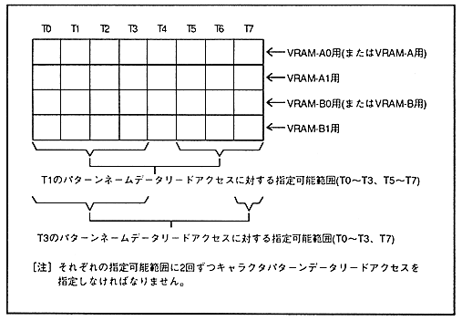

item | NBG0 to NBG3 | |||||||
Character Colors | 16 | 256 | 2048 | 32768 | 167710,000 | |||
Reduction setting | 1x | 1 / 2x | 1 / 4x | 1x | 1/2 times | 1 times | 1x | 1x |
| 1 | 2 | 4 | 2 | 4 | 4 | 4 | 8 |
Table 3.4 Character pattern data read access specification restrictions
Item | TV screen | Pattern name table data access timing | |||||||
T0 | T1 | T2 | T3 | T4 | T5 | T6 | T7 | ||
Character pattern | Normal | T0 to T2, | T0 to T3, | T0 to T3, | T0 to T3, | T0 ~ T3 | T1 ~ T3 | T2 , T3 | T3 |
High-resolution, | T0 ~ T2 | T1-T3 | T0, | T0, T1, | - | - | - | − |
If the reduction setting is 1 and character pattern data read access is required more than once, all character pattern data read access must comply with the specified restrictions. If the reduction setting is 1/2 or 1/4, the number of accesses required when the reduction setting is 1 time (1 when the number of character colors is 16 or 2 when the number of characters is 256) , You must ensure that you comply with the restrictions imposed by one pattern name data read access. For example, when the number of character colors is 256 and the reduction setting is 1/2, the specification restrictions on character pattern data read access when pattern name data read access is specified as T1 and T3 are as shown in Figure 3.4. The
Figure 3.4 Example of character pattern data read access specification
